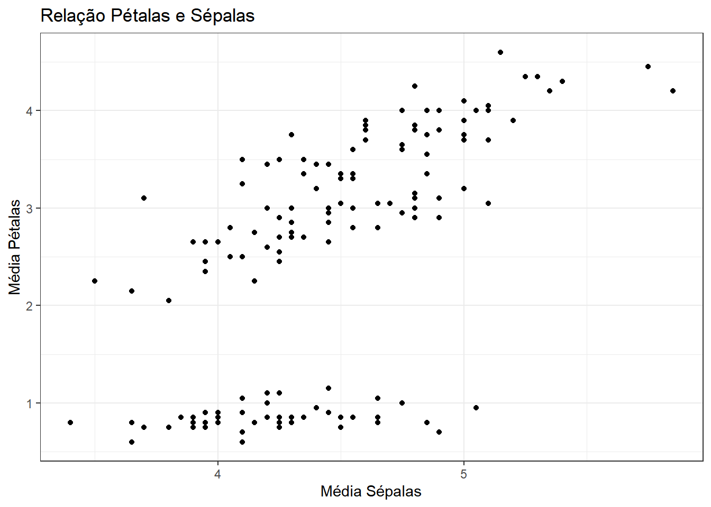
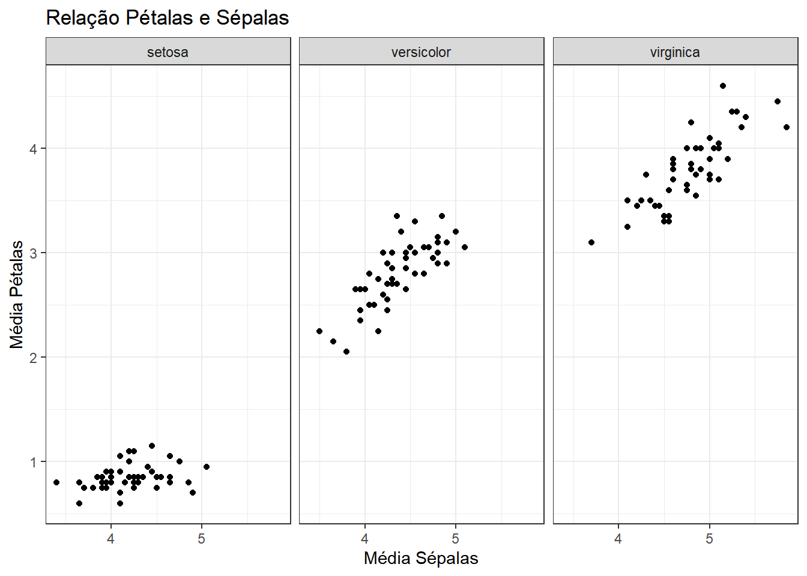
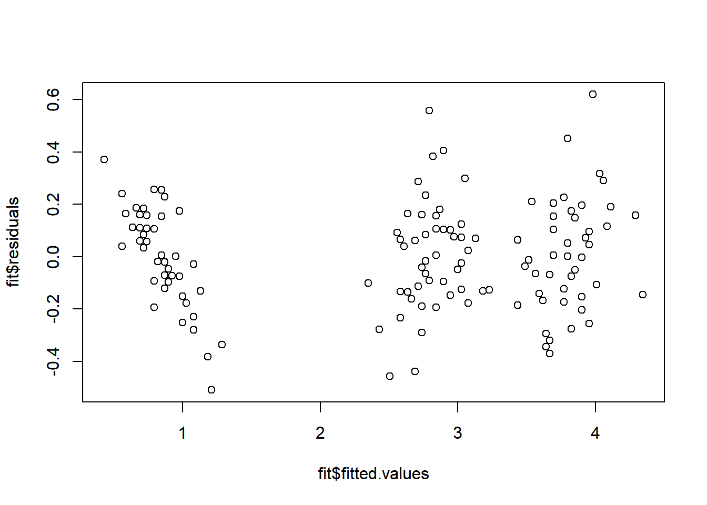

2 Projetos
Abaixo tenho alguns projetos análises de dados que fiz para treinar algumas habilidades.
2.1 Banco Iris
Para primeira análise não tinha como ser diferente, vou começar com o dataset Iris, que é uma das bases de dados mais utilizadas para fazer análises básicas.
Para verificar a estrutura do banco de dados iris podemos usar a função “head”:
head(iris)## Sepal.Length Sepal.Width Petal.Length Petal.Width Species
## 1 5.1 3.5 1.4 0.2 setosa
## 2 4.9 3.0 1.4 0.2 setosa
## 3 4.7 3.2 1.3 0.2 setosa
## 4 4.6 3.1 1.5 0.2 setosa
## 5 5.0 3.6 1.4 0.2 setosa
## 6 5.4 3.9 1.7 0.4 setosaUsando a função “head” podemos ver as primeiras linhas da base de dados e suas colunas.
Segundo o UCI Machine Learning, a base do Iris contém ao todo 150 linhas com 5 colunas, sendo:
- Sepal.Length = comprimento das sépalas (em cm);
- Sepal.Width = largura das sépalas (em cm);
- Petal.Lengt = comprimento das pétalas (em cm);
- Petal.Width = largura das pétalas (em cm);
- Species = espécie das plantas;
Para saber com qual análise posso começar vou verificar antes as classes das variáveis usando a função “glimpse” do pacote “dplyr.”
# Carregando a função dplyr
library(dplyr)## Warning: package 'dplyr' was built under R version 4.1.3glimpse(iris)## Rows: 150
## Columns: 5
## $ Sepal.Length <dbl> 5.1, 4.9, 4.7, 4.6, 5.0, 5.4, 4.6, 5.0, 4.4, 4.9, 5.4, 4.~
## $ Sepal.Width <dbl> 3.5, 3.0, 3.2, 3.1, 3.6, 3.9, 3.4, 3.4, 2.9, 3.1, 3.7, 3.~
## $ Petal.Length <dbl> 1.4, 1.4, 1.3, 1.5, 1.4, 1.7, 1.4, 1.5, 1.4, 1.5, 1.5, 1.~
## $ Petal.Width <dbl> 0.2, 0.2, 0.2, 0.2, 0.2, 0.4, 0.3, 0.2, 0.2, 0.1, 0.2, 0.~
## $ Species <fct> setosa, setosa, setosa, setosa, setosa, setosa, setosa, s~Sabendo que as classes são númericas vou utilizar o “summary” para uma visão geral.
summary(iris[,1:4])## Sepal.Length Sepal.Width Petal.Length Petal.Width
## Min. :4.300 Min. :2.000 Min. :1.000 Min. :0.100
## 1st Qu.:5.100 1st Qu.:2.800 1st Qu.:1.600 1st Qu.:0.300
## Median :5.800 Median :3.000 Median :4.350 Median :1.300
## Mean :5.843 Mean :3.057 Mean :3.758 Mean :1.199
## 3rd Qu.:6.400 3rd Qu.:3.300 3rd Qu.:5.100 3rd Qu.:1.800
## Max. :7.900 Max. :4.400 Max. :6.900 Max. :2.500Ao analisar os resultados pode-se notar que o comprimento das sépalas e pétalas é maior do que a largura dos mesmos.
Após observar brevemente o banco Iris gostaria de responder as seguintes perguntas:
- O tamanho de sépala e as espécies influenciam no tamanho de pétala?
- Se sim, qual é essa relação?
2.1.1 Análise descritiva
Para responder essa pergunta vou começar com análise descritivas, que podem ser simples mas que em muitos casos já conseguem identificar informações valiosas
Vou partir do pressuposto que a média entre comprimento e largura de sépalas e pétalas é um bom indicador do seu tamanho, então farei isso no R.
iris <- iris %>%
mutate(media_petala = (Petal.Length+Petal.Width)/2, # Média das pétalas
media_sepala = (Sepal.Length+Sepal.Width)/2) %>% # Média das sépalas
select(media_petala,media_sepala,Species)
head(iris, 5)## media_petala media_sepala Species
## 1 0.80 4.30 setosa
## 2 0.80 3.95 setosa
## 3 0.75 3.95 setosa
## 4 0.85 3.85 setosa
## 5 0.80 4.30 setosaPodemos ver acima como ficou o banco de dados agora com apenas 3 variáveis.
Primeiramente farei um gráfico para verificar visualmente se há uma possível relação entre a média de comprimento e largura das pétalas e sépalas.
# Carregando a função do ggplot2
library(ggplot2)
ggplot(iris) +
geom_point(aes(x = media_sepala,y = media_petala)) +
labs(title = "Relação Pétalas e Sépalas",
x = "Média Sépalas",
y = "Média Pétalas") +
theme_bw()
É possível notar que parece existir alguma relação, porém o efeito das espécies não nos permite enxergar isso da melhor forma, então vou segmentar o gráfico de acordo com a espécie.
ggplot(iris) +
geom_point(aes(x = media_sepala,y = media_petala)) +
labs(title = "Relação Pétalas e Sépalas",
x = "Média Sépalas",
y = "Média Pétalas") +
theme_bw() +
facet_grid(~ Species)
Agora podemos notar que as espécies parecem influenciar no tamanho das pétalas e sépalas, visto que os pontos se encontram em locais distintos dos gráficos. Além disso, nota-se possível relação positiva entre tamanho de sépalas e pétalas nas espécies versicolor e virginica, já a setosa não apresenta graficamente essa relação.
2.1.2 Análise de Regressão
Para avaliar se realmente existe essa relação estatística entre as pétalas, sépalas e espécie de planta eu vou usar a técnica de regressão linear.
# Usando a função lm para ajustar o modelo
fit <- lm(media_petala~media_sepala+Species, data = iris)
# Usando a função summary para avaliar resultados dos ajustes
summary(fit)##
## Call:
## lm(formula = media_petala ~ media_sepala + Species, data = iris)
##
## Residuals:
## Min 1Q Median 3Q Max
## -0.50872 -0.13092 0.00096 0.14311 0.61936
##
## Coefficients:
## Estimate Std. Error t value Pr(>|t|)
## (Intercept) -1.33611 0.18761 -7.122 4.49e-11 ***
## media_sepala 0.51935 0.04398 11.809 < 2e-16 ***
## Speciesversicolor 1.86837 0.04055 46.073 < 2e-16 ***
## Speciesvirginica 2.64209 0.04716 56.025 < 2e-16 ***
## ---
## Signif. codes: 0 '***' 0.001 '**' 0.01 '*' 0.05 '.' 0.1 ' ' 1
##
## Residual standard error: 0.2005 on 146 degrees of freedom
## Multiple R-squared: 0.9749, Adjusted R-squared: 0.9744
## F-statistic: 1893 on 3 and 146 DF, p-value: < 2.2e-16Acima temos alguns resultados interessantes, primeiramente é possível notar que o tamanho médio das sépalas e a espécie influencia no tamanho médio das pétalas, chego nessa conclusão pois o p-valor do modelos para cada um das variáveis é menor que 0,05.
A cada unidade que aumentamos no tamanho médio das sépalas, 0,51 é adicionado no tamanho médio das pétalas. Já quanto as espécies, o tamanho das pétalas na espécie Versicolor é 1,86 vezes maior que na espécie Setosa (que está oculto nos resultados) enquanto as pétalas na espécie Virginica são 2,64 vezes maiores que na Setosa.
Além disso, o R² foi de 0,9744, isso indica que aproximadamente 97% da variação do tamanho das pétalas é explicada pelo tamanho das sépalas e espécie.
Antes de chegar a uma conclusão final dos resultados devemos verificar algumas suposições. Para o modelo de regressão linear é necessário normalidade e homocedasticidade dos resíduos.
# Teste de normalidade de Shapiro Wilk
shapiro.test(fit$residuals)##
## Shapiro-Wilk normality test
##
## data: fit$residuals
## W = 0.99395, p-value = 0.7868O p-valor do teste de Shapiro Wilk foi de 0,7868, dessa forma concluímos que os resíduos seguem a distribuição normal.
# Verificação de homocedasticidade
plot(fit$fitted.values,fit$residuals)
Acima temos o gráfico dos resíduos pelo valores ajustados, a dispersão dos resíduos ao longo do eixo dos valores ajustados parece ser a mesma, esse é um grande indicativo de homocedasticidade dos resíduos, ou seja, variância constante.
2.1.3 Conclusão
Com os pressupostos verificados posso chegar a uma conclusão respondendo as perguntas feitas no início.
O tamanho de sépala e tipo de espécie influenciam sim no tamanho das pétalas, e essa relação acontece da seguinte forma:
- O tamanho de sépala tem uma relação positiva com o tamanho das pétalas, ou seja, quanto maior são as sépalas, maiores vão ser as pétalas.
- As espécies Virginica e Versicolor apresentam tamanho de pétala maior em relação a espécie Setosa
2.2 Data Sciente e credit scoring
Como grande entusiasta de modelos estatísticos e de crédito, busco sempre reter mais conhecimento sobre isso, nas últimas semanas venho lendo o livro Credit Scoring do Abharam Laredo. Nele o autor passa toda sua experiência sobre esse tema e no final fornece alguns bancos de dados e um “problema” que pode ser utilizado para colocar em prática o que é aprendido com a leitura. Aproveitei essa oportunidade e usei o problema passado para desenvolver um modelo e uma política de crédito que solucione o caso específico.
Atividade proposta:
“Livraria Dorela é uma cadeia de livrarias que tem quiosques nos principais supermercados das grandes capitais brasileiras. A Dorela passou a fazer o financiamento de livros, de acordo com um score definido de forma subjetiva, a taxa de rejeição era de 30% e a taxa aplicada era muito baixa, visto isso, os resultados não eram satisfatórios.
O novo diretor de crédito da Dorela, que havia atuado como gestor de credito de uma grande cadeira verejista de moda e tinha experiência no uso de modelos estatísticos decidiu desenvolver um modelo para esse caso.
Ele coletou uma amostra aleatória de 3.000 clientes cujo financiamento foi realizado no período de julho de 2007 a junho de 2008, ele considerou a performance do cliente nos 6 meses seguintes, e classificou como mau cliente aquele que teve qualquer atraso acima de 30 dias, caso contrário era classificado com bom cliente.”
Com esse banco de dados disponível vou iniciar o estudo e propor ao final um modelo e política que atenda a necessidade da livraria Dorela.
# Pacotes
library(dplyr)
library(ggplot2)
library(pROC)## Warning: package 'pROC' was built under R version 4.1.3## Type 'citation("pROC")' for a citation.##
## Attaching package: 'pROC'## The following objects are masked from 'package:stats':
##
## cov, smooth, varlibrary(readr)
set.seed(12345)2.2.1 Banco de Dados
# Lendo dataset
data <- readxl::read_xls("C:\\Users\\gabri\\Documents\\Projetos\\Crédito\\Laredo\\351.xls")
data <- data %>%
select(IDADE,UNIFED,FONE,INSTRU,CARTAO,RESTR,RESID,FICÇÃO,NÃOFICÇAO,AUTOAJUDA,CATEG,STATUS)
#---------------
# Tipo das colunas da base de dados
glimpse(data)## Rows: 3,000
## Columns: 12
## $ IDADE <dbl> 26, 43, 33, 39, 43, 40, 39, 50, 51, 45, 67, 34, 49, 59, 41, ~
## $ UNIFED <chr> "SP", "SP", "OUTROS", "RJ", "OUTROS", "RJ", "SP", "SP", "OUT~
## $ FONE <chr> "SIM", "SIM", "SIM", "SIM", "SIM", "SIM", "SIM", "SIM", "SIM~
## $ INSTRU <chr> "PRIM & SEC", "SUP", "SUP", "MV", "PRIM & SEC", "PRIM & SEC"~
## $ CARTAO <chr> "SIM", "NAO", "NAO", "SIM", "SIM", "SIM", "MV", "SIM", "SIM"~
## $ RESTR <chr> "SIM", "SIM", "SIM", "NAO", "NAO", "NAO", "NAO", "NAO", "SIM~
## $ RESID <chr> "PROP", "ALUG", "PROP", "PROP", "PROP", "PROP", "PROP", "PRO~
## $ FICÇÃO <chr> "SIM", "NAO", "SIM", "SIM", "SIM", "SIM", "SIM", "SIM", "SIM~
## $ NÃOFICÇAO <chr> "NAO", "NAO", "NAO", "NAO", "NAO", "NAO", "NAO", "NAO", "NAO~
## $ AUTOAJUDA <chr> "SIM", "SIM", "NAO", "NAO", "NAO", "SIM", "NAO", "NAO", "NAO~
## $ CATEG <dbl> 1, 1, 0, 1, 1, 1, 0, 0, 0, 0, 0, 0, 0, 0, 0, 1, 0, 0, 1, 0, ~
## $ STATUS <chr> "MAU", "MAU", "BOM", "BOM", "BOM", "BOM", "MAU", "BOM", "BOM~